Mapping wildfire burn severity
I used pre-fire and post-fire satellite imagery in ArcGIS Pro to examine changes in vegetation and surface conditions. The workflow included NBR calculation, dNBR classification, a SWIR composite, and area tabulation within the fire boundary.
The outputs show the spatial distribution of relative burn severity. These are remotely sensed classifications; field validation is not documented in this sample.
Prepared imagery, calculated spectral indices, classified the change raster, and interpreted and documented the outputs.
ArcGIS Pro · NBR / dNBR · Raster classification · Tabulate Area
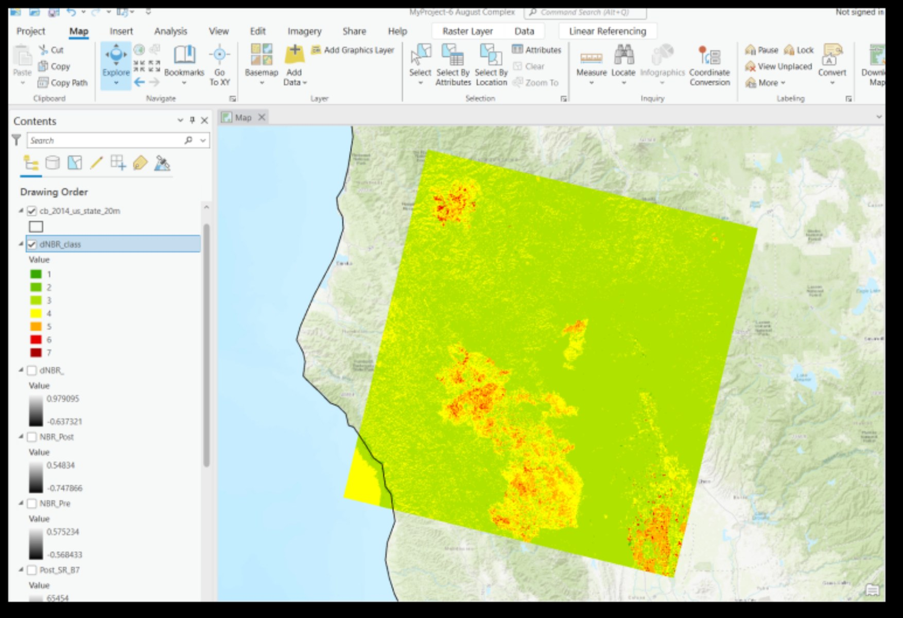
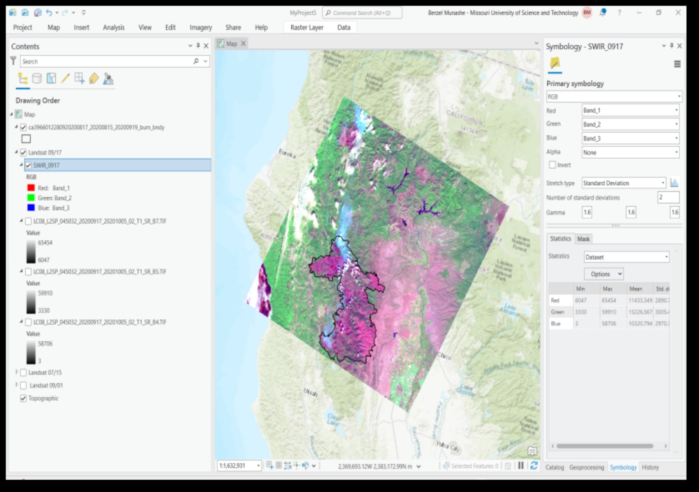
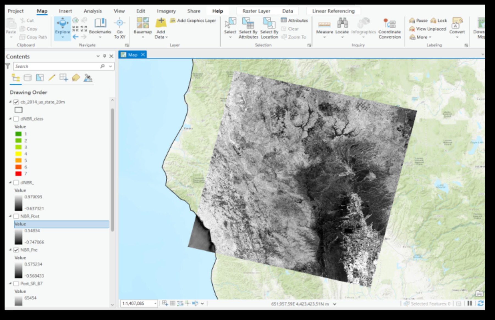
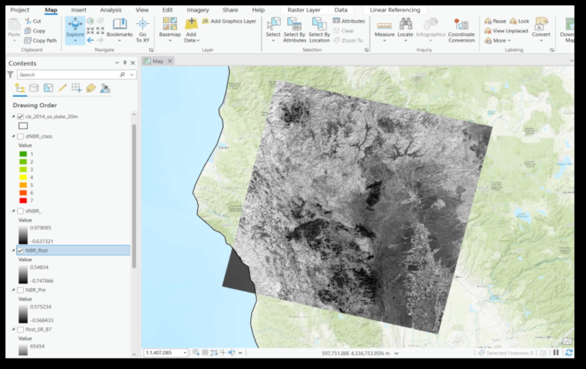
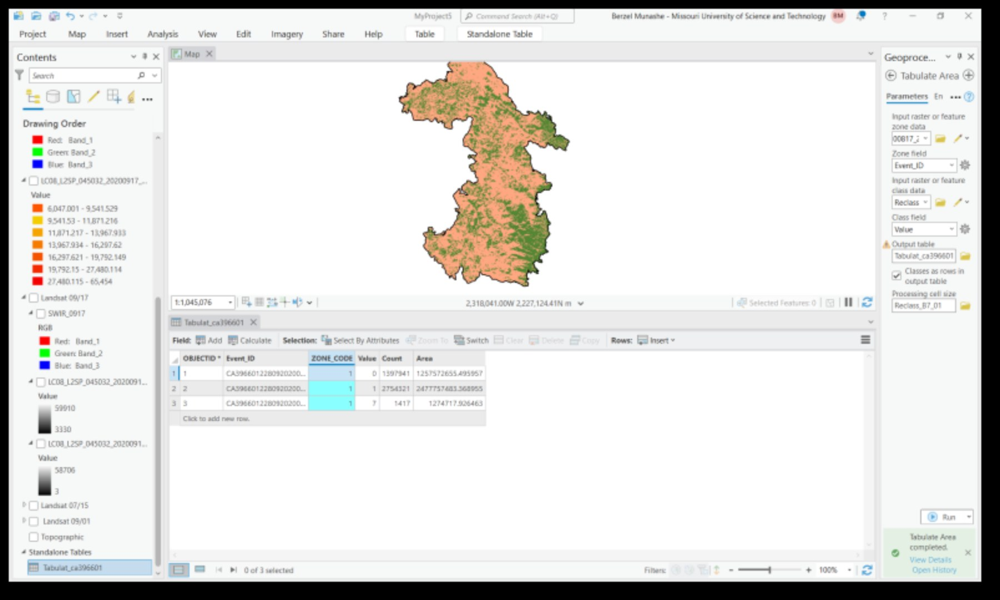
Comparing flood extent with SAR
I compared pre-flood and peak-flood SAR scenes and generated binary water masks for the same area of interest. The February 22 and March 18 outputs show how mapped surface-water coverage changed between the two dates.
The peak-flood mask shows more extensive likely water pixels. The masks support visual comparison; an independently verified flood area is not reported here.
Clipped the scenes, produced water-mask rasters, compared the outputs, and prepared map layouts with legends, north arrows, and scale bars.
ArcGIS Pro · SAR interpretation · Water masking · Map layout
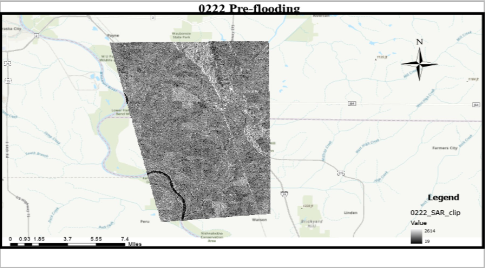
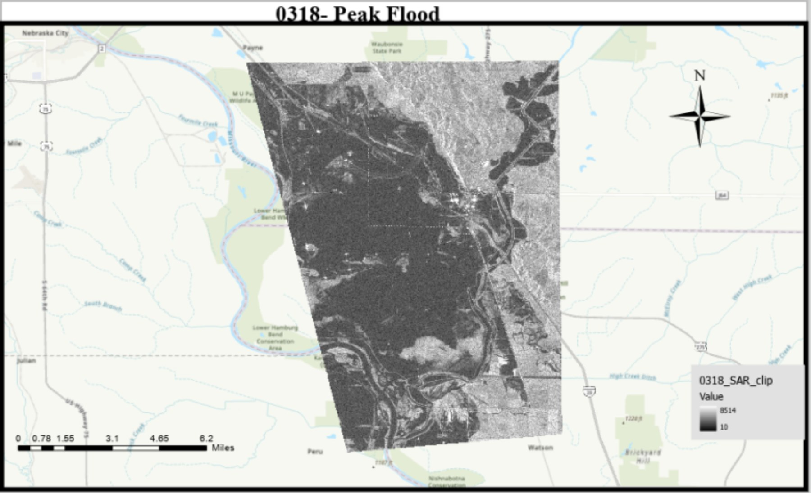
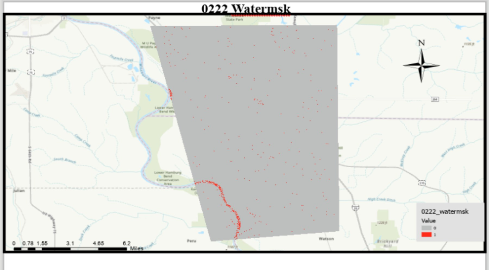
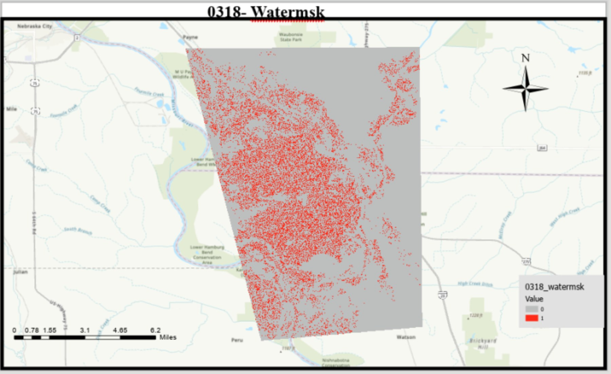
Exploring satellite band combinations
I compared alternate RGB band assignments in ArcGIS Pro to examine how different displays reveal surface features and tonal variation.
Configured raster symbology, compared feature contrast, and documented the displays as part of the interpretation workflow.
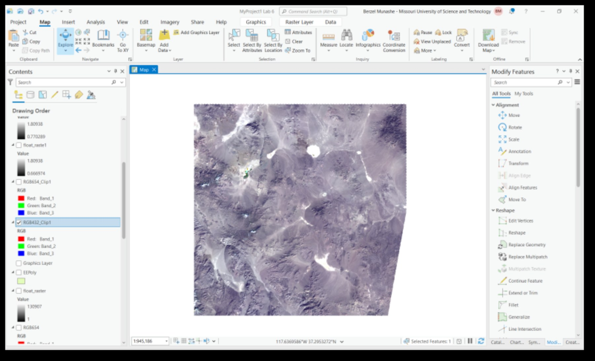
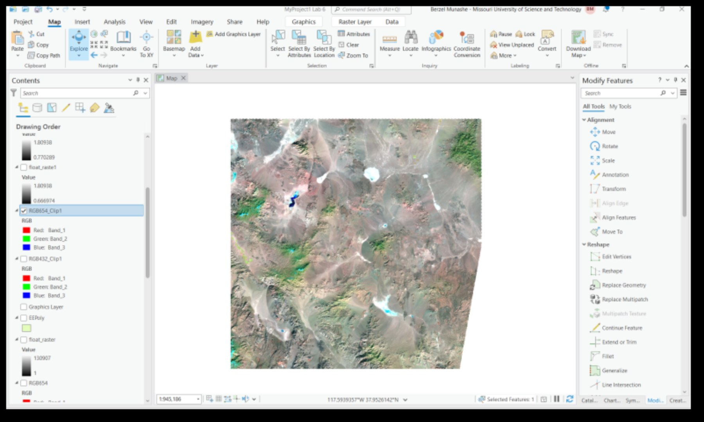
Critical minerals prospectivity
I have also worked on critical minerals mapping in Missouri using satellite imagery, terrain derivatives, and mineral occurrence data. Maps and results from that project are not included in this work sample.
About these samples: selected course-based work. Images are original screenshots and map layouts from my project document. Open any image to inspect it at full size.
Let’s talk spatial analysis.
Berzel Munashe Gunzo
Geological Engineering · Missouri University of Science and Technology